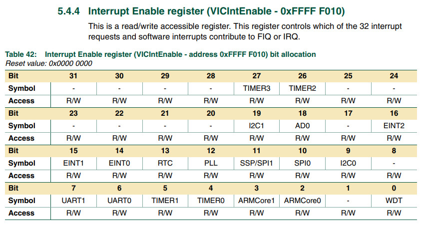
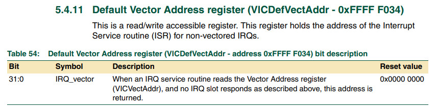
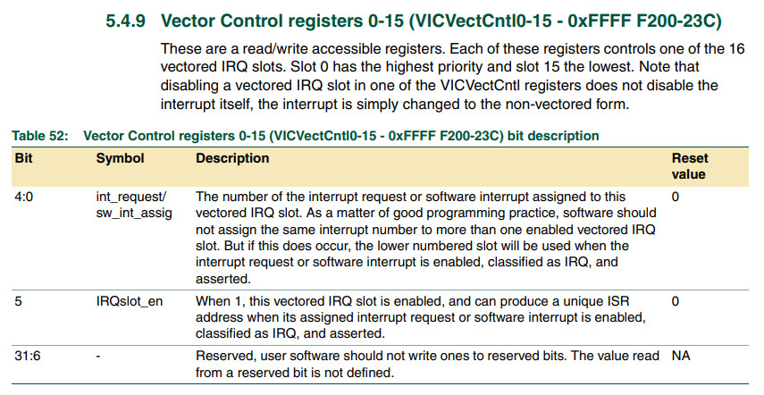
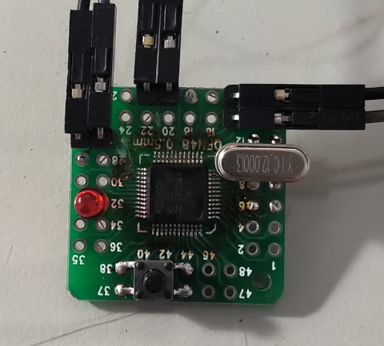
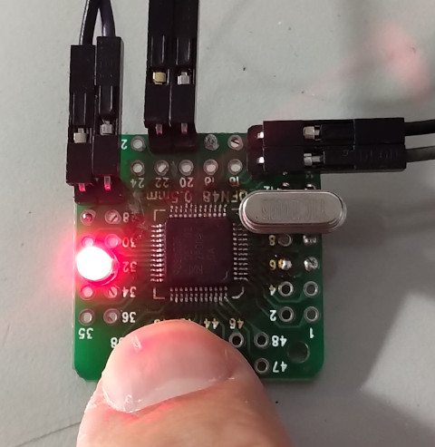

參考資料：
https://www.keil.com/dd/docs/datashts/philips/user_manual_lpc2101_2102_2103.pdf
暫存器



.equ IODIR, 0xe0028008
.equ IOCLR, 0xe002800c
.equ IOSET, 0xe0028004
.equ PINSEL0, 0xe002c000
.equ EXTINT, 0xe01fc140
.equ VICIntEnable, 0xfffff010
.equ VICDefVectAddr, 0xfffff034
.equ VICVectAddr0, 0xfffff100
.equ VICVectCntl0, 0xfffff200
.text
.align 2
.global _start
_start: b reset
_undef: b .
_swi: b .
_pabort: b .
_dabort: b .
_reserved: b .
_irq: ldr pc, [pc, #-0xff0]
_fiq: b .
reset:
mrs r0, cpsr
bic r0, #0x80
msr cpsr_c, r0
ldr r0, =PINSEL0
ldr r1, =(1 << 28)
str r1, [r0]
ldr r0, =VICIntEnable
ldr r1, =(1 << 15)
str r1, [r0]
ldr r0, =VICDefVectAddr
ldr r1, =irq_handler
str r1, [r0]
ldr r0, =VICVectCntl0
ldr r1, =0x0f
str r1, [r0]
ldr r0, =IODIR
ldr r1, =(1 << 22)
str r1, [r0]
ldr r0, =IOCLR
ldr r1, =(1 << 22)
str r1, [r0]
b .
irq_handler:
ldr r0, =IOSET
ldr r1, =(1 << 22)
str r1, [r0]
ldr r0, =EXTINT
ldr r1, =0x02
str r1, [r0]
subs pc, lr, #4
.end
P.S. ldr pc, [pc, #-0xff0] = 0x18(irq address) + 8(fetch、decode) - 0xff0 = VICVectAddr(0xfffff030)
完成

